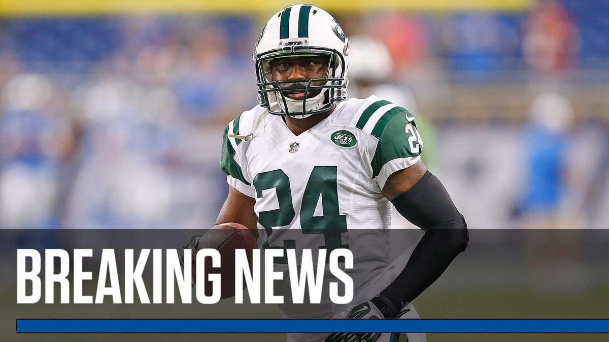
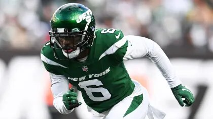
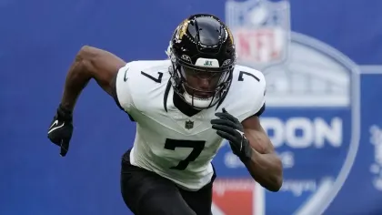
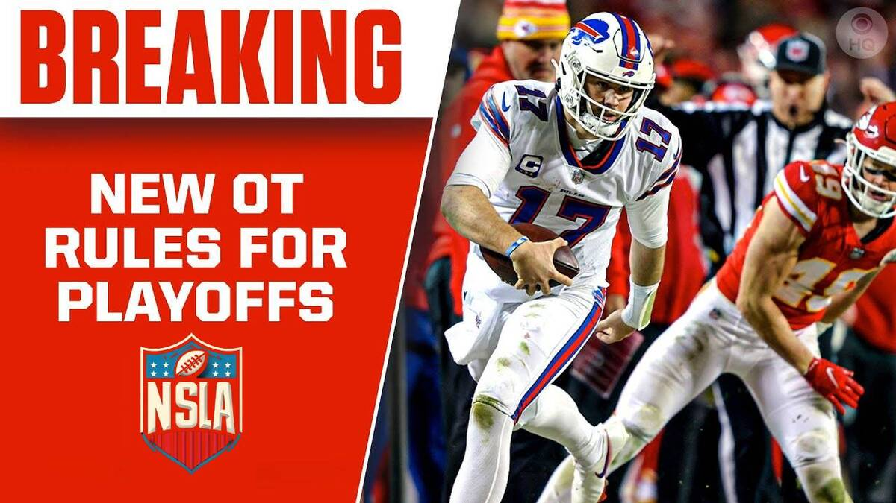
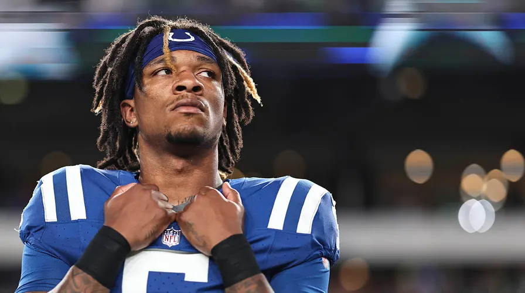
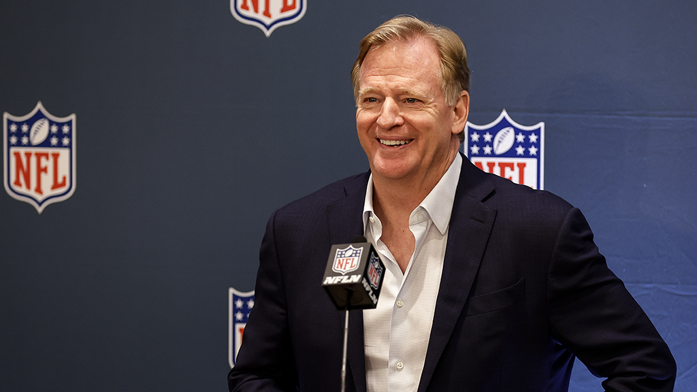
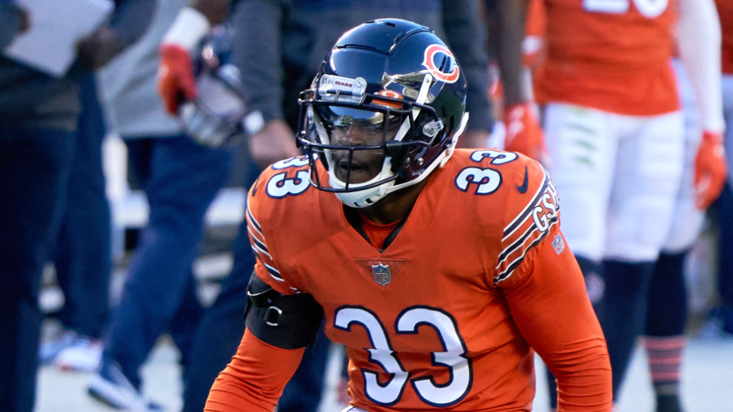

Últimas Noticias

Un desastre llamado Zach Wilson

Los Jets cambian al WR Mecole Hardman a los Chiefs

Informe de lesiones de la NSLA de la semana 7 para la temporada 2023
Noticias Populares

Nuevas reglas para los playoffs

Anthony Richardson se someterá a una cirugía de hombro que pondrá fin a su temporada

El comisionado de la NSLA, Roger Goodell, acuerda una extensión de contrato hasta 2027
Para ti

La NSLA busca eliminar el tackle con caída de cadera y discute el 'empuje de trasero'

Bears CB Jaylon Johnson 'no ciego' para negociar